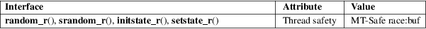

random_r, srandom_r, initstate_r, setstate_r − reentrant random number generator
Standard C library (libc, −lc)
#include <stdlib.h>
int
random_r(struct random_data *restrict buf,
int32_t *restrict result);
int srandom_r(unsigned int seed, struct
random_data *buf);
int
initstate_r(unsigned int seed, char
statebuf[restrict .statelen],
size_t statelen, struct random_data
*restrict buf);
int setstate_r(char *restrict statebuf,
struct random_data *restrict buf);
Feature Test Macro Requirements for glibc (see feature_test_macros(7)):
random_r(),
srandom_r(), initstate_r(),
setstate_r():
/* glibc >= 2.19: */ _DEFAULT_SOURCE
|| /* glibc <= 2.19: */ _SVID_SOURCE || _BSD_SOURCE
These functions are the reentrant equivalents of the functions described in random(3). They are suitable for use in multithreaded programs where each thread needs to obtain an independent, reproducible sequence of random numbers.
The random_r() function is like random(3), except that instead of using state information maintained in a global variable, it uses the state information in the argument pointed to by buf, which must have been previously initialized by initstate_r(). The generated random number is returned in the argument result.
The srandom_r() function is like srandom(3), except that it initializes the seed for the random number generator whose state is maintained in the object pointed to by buf, which must have been previously initialized by initstate_r(), instead of the seed associated with the global state variable.
The initstate_r() function is like initstate(3) except that it initializes the state in the object pointed to by buf, rather than initializing the global state variable. Before calling this function, the buf.state field must be initialized to NULL. The initstate_r() function records a pointer to the statebuf argument inside the structure pointed to by buf. Thus, statebuf should not be deallocated so long as buf is still in use. (So, statebuf should typically be allocated as a static variable, or allocated on the heap using malloc(3) or similar.)
The setstate_r() function is like setstate(3) except that it modifies the state in the object pointed to by buf, rather than modifying the global state variable. state must first have been initialized using initstate_r() or be the result of a previous call of setstate_r().
All of these functions return 0 on success. On error, −1 is returned, with errno set to indicate the error.
|
EINVAL |
A state array of less than 8 bytes was specified to initstate_r(). | ||
|
EINVAL |
The statebuf or buf argument to setstate_r() was NULL. | ||
|
EINVAL |
The buf or result argument to random_r() was NULL. |
For an explanation of the terms used in this section, see attributes(7).

GNU.
The initstate_r() interface is confusing. It appears that the random_data type is intended to be opaque, but the implementation requires the user to either initialize the buf.state field to NULL or zero out the entire structure before the call.
drand48(3), rand(3), random(3)